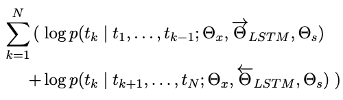
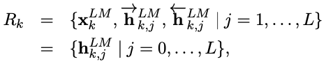

NLP Summary
ELMo
Introduction
Our word vectors are learned functions of the internal states of a deep bidirectional language model (biLM), which is pretrained on a large text corpus.
learning high quality representations can be challenging. They should ideally model both:
- complex characteristics of word use (e.g., syntax and semantics), and
- how these uses vary across linguistic contexts (i.e., to model polysemy).
ELMo (Embeddings from Language Models). ELMo representations are deep, in the sense that they are a function of all of the internal layers of the biLM.
Using intrinsic evaluations, we show that the higher-level LSTM states capture context-dependent aspects of word meaning (e.g., they can be used without modification to perform well on supervised word sense disambiguation tasks) while lowerlevel states model aspects of syntax (e.g., they can be used to do part-of-speech tagging).
Related work
Due to their ability to capture syntactic and semantic information of words from large scale unlabeled text, pretrained word vectors are a standard component of most state-of-the-art NLP architectures. However, these approaches for learning word vectors only allow a single contextindependent representation for each word.
Previously proposed methods overcome some of the shortcomings of traditional word vectors by either enriching them with subword information or learning separate vectors for each word sense. Our approach also benefits from subword units through the use of character convolutions, and we seamlessly incorporate multi-sense information into downstream tasks without explicitly training to predict predefined sense classes.
Other recent work has also focused on learning context-dependent representations. context2vec uses a bidirectional LSTM to encode the context around a pivot word. Other approaches for learning contextual embeddings include the pivot word itself in the representation and are computed with the encoder of either a supervised neural machine translation (MT) system or an unsupervised language model.
what?
Previous work has also shown that different layers of deep biRNNs encode different types of information.
ELMo: Embeddings from Language Models
ELMo word representations are functions of the entire input sentence. They are computed on top of two-layer biLMs with character convolutions, as a linear function of the internal network states. This setup allows us to do semi-supervised learning, where the biLM is pretrained at a large scale and easily incorporated into a wide range of existing neural NLP architectures.
Bidirectional language models
At each position k, each LSTM layer outputs a context-dependent representation h(LM, k, j) where j = 1,…,L. The top layer LSTM output, h(LM, k, L) , is used to predict the next token tk+1 with a Softmax layer.
A backward LM can be implemented in an analogous way to a forward LM, with each backward LSTM layer j in a L layer deep model producing representations h(LM, k, j) of tk given (tk+1,…,tN).
A biLM combines both a forward and backward LM. Our formulation jointly maximizes the log likelihood of the forward and backward directions:

We tie the parameters for both the token representation (Θx) and Softmax layer (Θs) in the forward and backward direction while maintaining separate parameters for the LSTMs in each direction.
ELMo
ELMo is a task specific combination of the in- termediate layer representations in the biLM. For each token tk, a L-layer biLM computes a set of 2L + 1 representations.

h(LM, k, j) is the token layer.
ELMo collapses all layers in R into a single vector, ELMok = E (Rk; Θe). More generally, we compute a task specific weighting of all biLM layers:
stask are softmax-normalized weights and the scalar parameter γtask allows the task model to scale the entire ELMo vector. γ is of practical importance to aid the optimization process.
Considering that the activations of each biLM layer have a different distribution, in some cases it also helped to apply layer normalization (Ba et al., 2016) to each biLM layer before weighting.
Using biLMs for supervised NLP tasks
To add ELMo to the supervised model, we first freeze the weights of the biLM and then concatenate the ELMo vector (ELMo, task, k) with xk and pass the ELMo enhanced representation [x; (ELMo, task, k)] into the task RNN.
Finally, we found it beneficial to add a moderate amount of dropout to ELMo and in some cases to regularize the ELMo weights by adding λ∥w∥2 to the loss. This imposes an inductive bias on the ELMo weights to stay close to an average of all biLM layers.
Pre-trained bidirectional language model architecture
For a purely character-based input representation, we halved all embedding and hidden dimensions from the single best model CNN-BIG-LSTM in Jozefowicz et al. (2016). The final model uses L = 2 biLSTM layers with 4096 units and 512 dimension projections and a residual connection from the first to second layer. The context insensitive type representation uses 2048 character n-gram convolutional filters followed by two highway layers (Srivastava et al., 2015) and a linear projection down to a 512 representation.
The context insensitive type representation uses 2048 character n-gram convolutional filters followed by two highway layers and a linear projection down to a 512 representation.
As a result, the biLM provides three layers of representations for each input token, including those outside the training set due to the purely character input.
Once pretrained, the biLM can compute representations for any task.